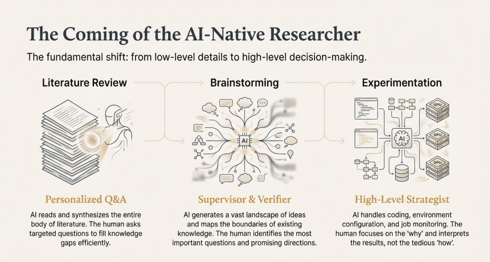

The Rise of AI-Native Researchers
Code is Cheap, Show me the Talk
Do you know how high school students write code today?
They don't open an IDE. They don't type a single line of code. They simply tell an AI agent what they want in plain English—and watch it happen.
I call these young programmers AI-native programmers. For those of us who learned to code before 2023, this feels almost unthinkable. We spent years memorizing syntax, debugging semicolons, and wrestling with documentation. But here's the truth: that knowledge is becoming obsolete. AI agents can handle syntax. They can handle boilerplate. They can handle the tedious details we once considered essential skills.
As a researcher, this got me thinking: What will AI-native research look like?
And more importantly—what does this mean for those of us doing science right now?
The Three Pillars of Research (And How AI Transforms Each One)
Research, at its core, breaks down into three fundamental stages: literature review, brainstorming, and experimentation. Let me walk you through how AI is revolutionizing each one.

1 Literature Review: From Reading to Querying
Let's be honest—no human can truly keep up with the flood of academic papers being published today. The volume is simply too overwhelming.
In the AI-native future, papers are no longer meant to be read by humans. They're meant to be processed by AI.
Here's the shift: instead of spending hours struggling through dense papers, you let AI digest the entire landscape of literature. Then, you interact with that knowledge through Q&A. You ask questions. You probe deeper. You clarify confusion.
This approach is remarkably efficient because the AI adapts to your understanding. It knows what you already grasp and what you're still missing. It personalizes your learning journey in ways a static paper never could.
2 Brainstorming: Expanding the Boundaries of Possibility
Human creativity is powerful—but it's also limited. We can only hold so many ideas in our heads at once. We struggle to see the edges of our own knowledge.
AI changes this equation entirely. An AI can generate tens of ideas in the time it takes you to sketch one. It can systematically explore the boundaries of a research space, identifying gaps and opportunities that might take a human researcher months to notice.
So the brainstorming process becomes: AI generates; humans evaluate. Your role shifts from idea generator to idea curator. You become the one asking:
- Which problems actually matter?
- Which directions show real promise?
- Which ideas are worth pursuing?
This is where human judgment, taste, and domain understanding dominate. You become the decision-maker—the one who sets direction, defines priorities, and commits resources.
3 Experimentation: From Execution to Supervision
For anyone who's done (computational) experimental research, you know the pain: setting up environments, configuring dependencies, managing GPUs, babysitting training runs at 2 AM. These tasks consume enormous amounts of time and mental energy—time that could be spent on actual thinking.
In the AI-native paradigm, agents handle all of this. They configure. They execute. They monitor. They report back.
And you? You focus on what humans do best: high-level, intelligent decision-making. You interpret results. You pivot strategies. You see the bigger picture. The tedious execution layer—implementation, environment, compute infra etc.—becomes invisible, letting you operate at the level of ideas.
This shift to AI-native research is irreversible. And with this, research is about to become more fulfilling than ever.
When you're freed from tedious, low-level details, you get to spend your time on what actually drew you to research in the first place—thinking deeply, exploring fascinating ideas, and making meaningful discoveries.
The researchers who thrive in the coming years won't be those who resist this change. They'll be those who embrace it. Those who ask: How can I leverage AI to make myself stronger? How can I maximize what AI does for me?
So How Should You Position Yourself?
If AI is transforming research, what skills should you be developing? What position should you be aiming for?
Here's my take: People with taste and domain knowledge are positioned to benefit the most.
Why? Because they already know how to supervise effectively. They understand what "good" looks like in their field. They can guide an AI agent toward the right problems and recognize when it's going astray.
What these people often lack isn't intelligence or insight—it's time. Time to execute all the steps. Time to run all the experiments. Time to read all the papers.
Being a great AI supervisor is the meta-skill of this era. The principle is simple but profound: If you can define the task perfectly, the AI agent can do it.
The balance between decision-making and execution is shifting. I'm becoming much more intentional about slowing down upfront—forcing myself to spend at least 50% of my time on planning before execution.
The clearer your thinking, the more rigorous your standards, the more precisely you can articulate what you want—the more powerfully AI amplifies your capabilities.
If you're smart and rigorous, you're exactly the kind of person who will benefit most from this revolution.
When you're freed from tedious, low-level details, you get to spend your time on what actually drew you to research in the first place—thinking deeply, exploring fascinating ideas, and making meaningful discoveries.